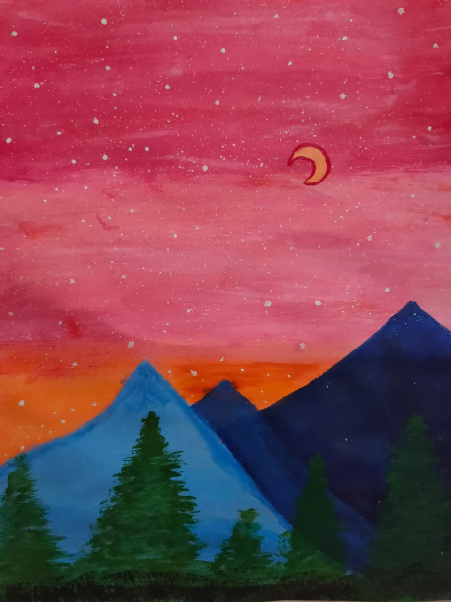
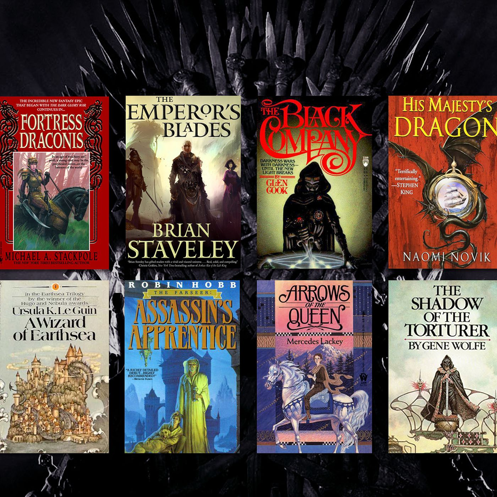
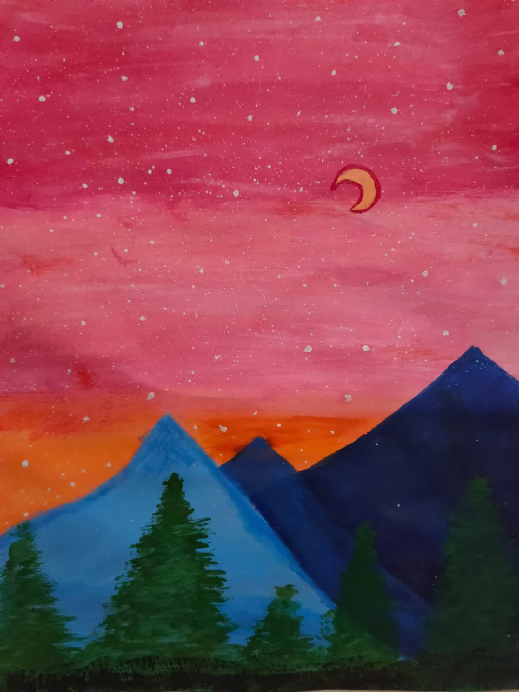
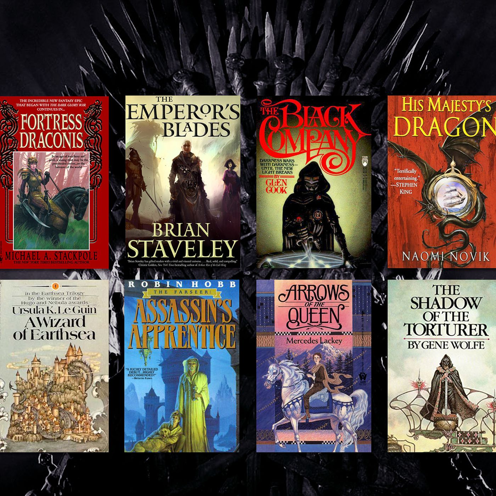

PERSONAL WEBSITE
Hi , I'm Kiran Priya.
Most of my friends call me Kiran . My home town is Warangal . As of now I am pursuing my B.Tech in Computer Science Engineering(CSE) at BV RAJU INSTITUTE OF TECHNOLOGY, Narsapur . I really love technology so I chose this stream.
About Me
Hobbies
* I like to spend my free time by Dancing and playing BasketBall .
* Reading novels of gener supernatural and Science fictions .
* Exploring new places and last but not the least I love doing Arts and Crafts .
 



Qualities
1. Straight forward
2.Kind and honest
3.Optimistic
4.Good at team works
5.I,m a bit introvert.
Languages spoken
Telugu , Hindi and Engish
Educational qualifications
Schooling
I have completed my schooling in Warangal at St.Gabriel's High School . Our school not only concentrates on studies but gives equal priority to extracurricular activities . I have scored 9.7 in tenth standard .
Intermediate
I have joined in Narayana Junior College for my intermediate . I have scored 952 marks in inter .
Engineering
I have got admitted into BVRITN with my eamcet score of 6253 . And I'm a second year CSE student in BVRITN . My CGPA is 9.4 .
Coding Skills


C , Python .
Frontend Development Skills HTML , CSS , JAVASCRIPT .
Goals
I want to become a software developer and in future I want to start a bussiness of my own irrespective of the field .